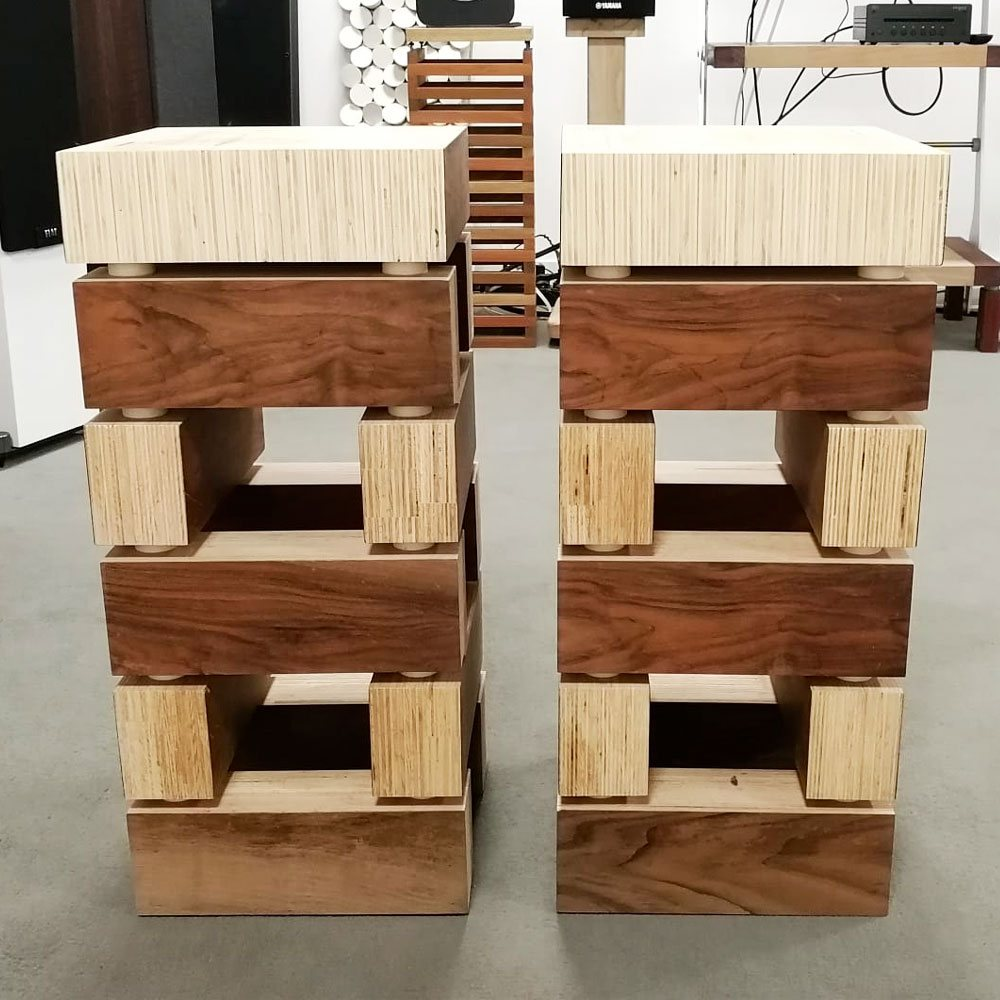
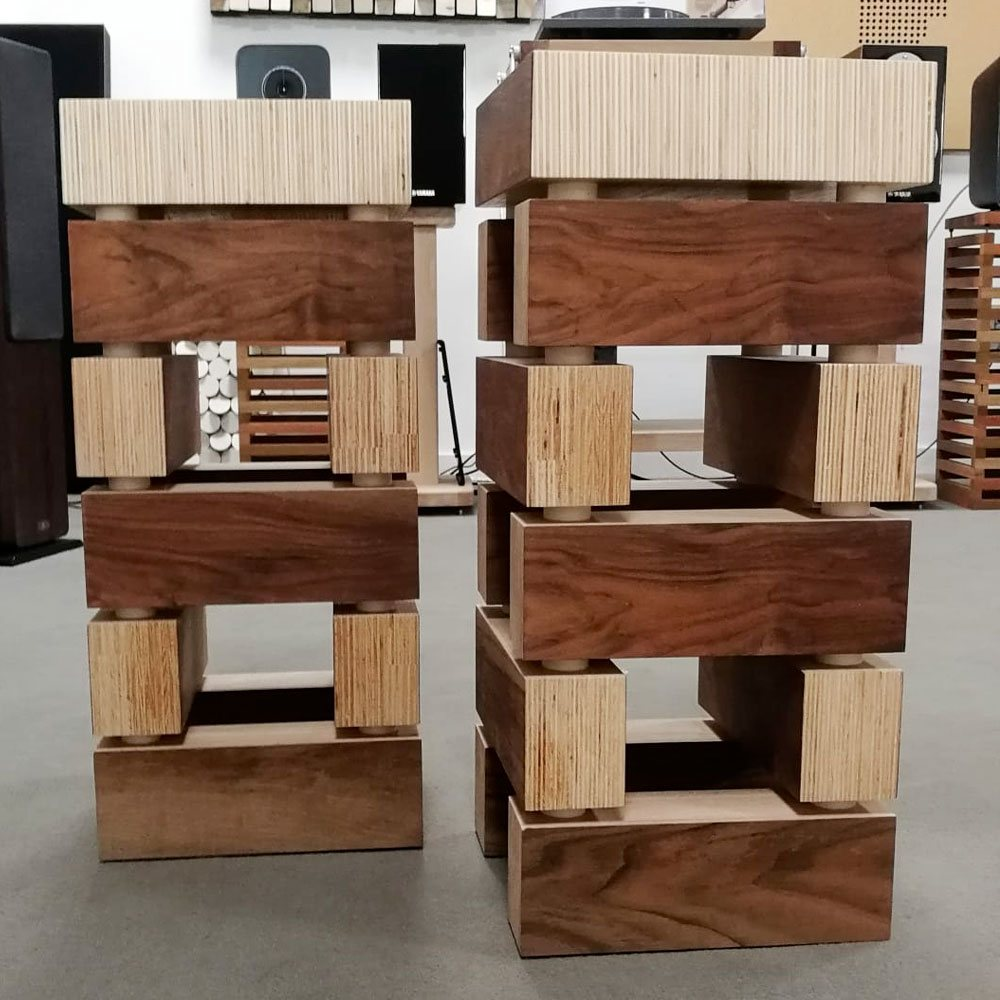
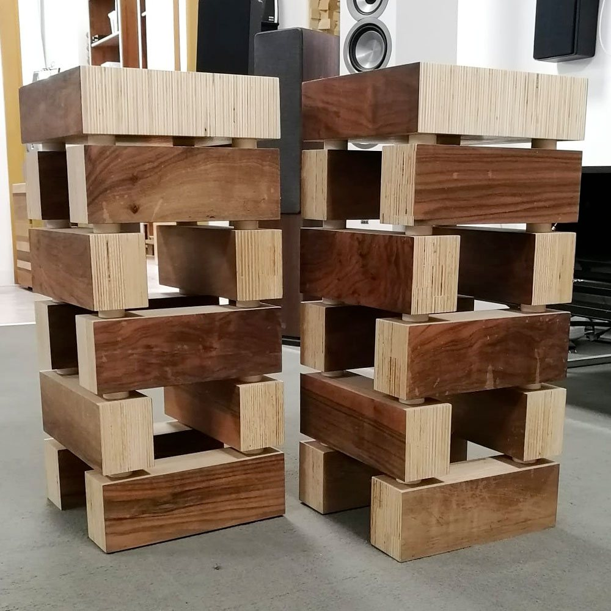
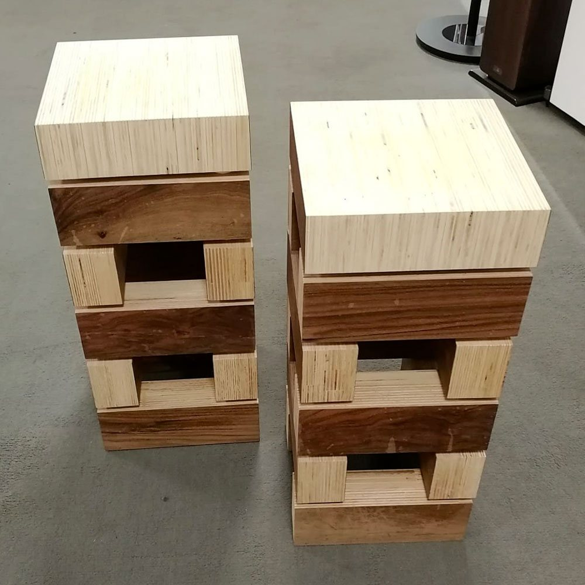

Wood Brick Stand per diffusori in legno
Una coppia di stand per diffusori costruiti a blocchi, come mattoni di legno: multistrato di Pioppo e Noce Nazionale, lasciati al naturale.
- Pioppo e Noce Nazionale
- 55 cm di altezza
- 12,9 kg ciascuno
Essenze su richiestaScopri le essenze
- Faggio
- Rovere
- Noce Canaletto
- Ciliegio
- Frassino
- Doussiè
- Wengè
300 € la coppiaprezzi su extrasound.it



Mattoni di legno, separati dal suono.
Ogni stand è una pila di blocchi in multistrato di Pioppo, alternati a blocchi impiallacciati in Noce Nazionale. Tra un blocco e l'altro c'è una rondella in plastica: separa i pezzi ed evita che le vibrazioni del diffusore corrano lungo la colonna.
Il legno non è trattato con vernici o impregnanti: è lasciato volutamente al naturale.
Lo trovi nel nostro showroom di Cesena. Fabrizio lo costruisce anche nuovo, sulle misure dei tuoi apparecchi e della tua casa.
MaterialeMultistrato di Pioppo, impiallacciatura in Noce Nazionale
Dimensioni (L × A × P)24,2 × 55 × 24,2 cm
Peso12,9 kg ciascuno
Tra i blocchiRondelle in plastica antivibrazione
FinituraNaturale, senza vernici né impregnanti
FornituraCoppia